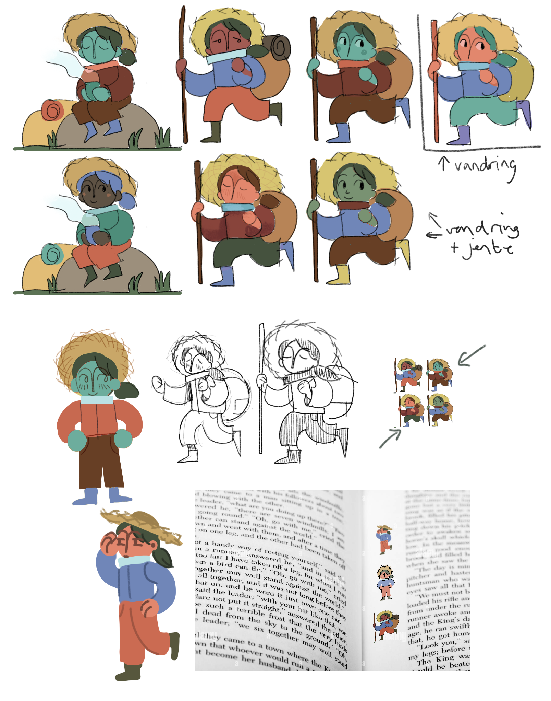
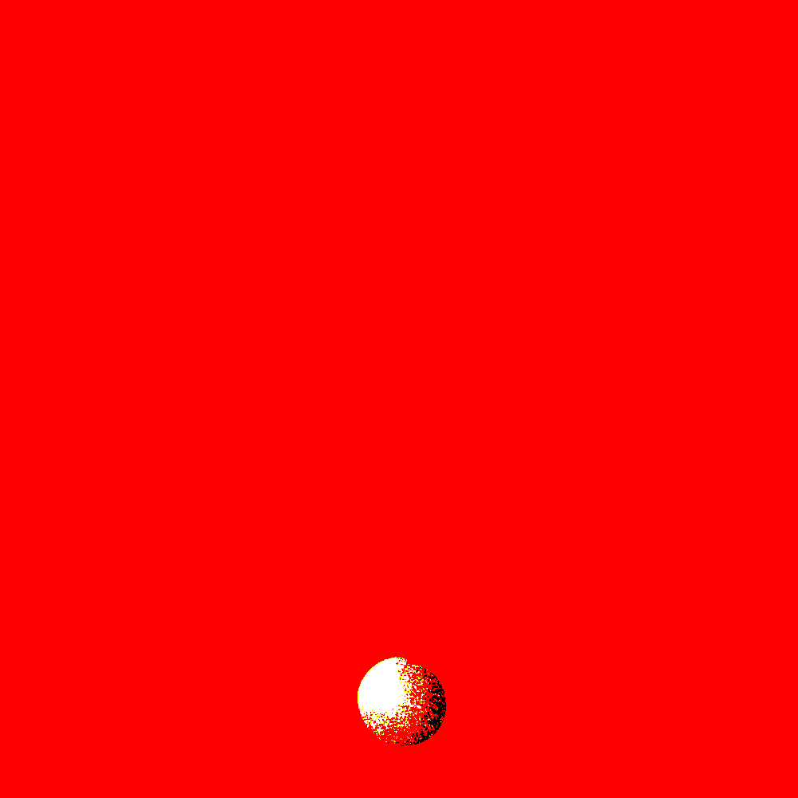

Til tidsskriftet Replikk” lagde jeg et sett med små animasjoner av en vandrer. Karakteren er en kombinasjon av temaene jente og vandring, og bruker begge fargepalettene til utgaven.





Dette er utdrag fra et skoleprosjekt i 2022 som gikk ut på å lage en animasjonsfilm med et komisk tema.
Jeg valgte å lage en rar liten film om en cowboy som blir tatt ut av en tradisjonell western film
og satt inn i nåtids Bergen. Der må han navigere hverdagslige ting som å vise legitimasjon i butikk
og oppdage at saloon og salon ikke er helt det samme.
Animasjonen er laget i After Effects.
Animasjonen er laget i After Effects.
En test av å animere i vr! Beklager oppløsning :)